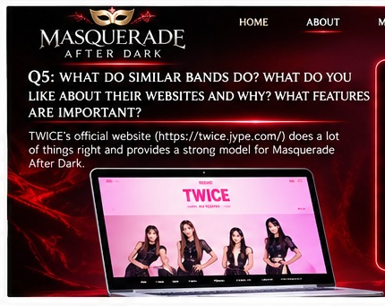

05 / COMPETITOR INSPIRATION
Learn from TWICE. Build a World of Our Own.
Research Question 5
What do similar bands do well, and which features matter?
The reference study identifies TWICE's official website as a useful model for organizing a K-pop group's digital presence. Masquerade After Dark can adapt six content areas while preserving its own three-color identity and masquerade theme.
Reference: TWICE Official Website

Individual profiles for Miss Red, Miss White, and Miss Black, highlighting their personalities, signature colors, and musical roles.
A dedicated discography, photo gallery, and video library featuring music releases, performances, and exclusive behind-the-scenes content.
News, announcements, and an organized event schedule featuring upcoming performances, livestreams, and fan activities.
The proposed website will incorporate six important content areas inspired by TWICE's official website: member profiles, discography, photo gallery, video library, news and announcements, and event schedule. Masquerade After Dark will differentiate itself through its dramatic masquerade theme, three-color member identities, and interactive fan experiences.
Academic concept only. The band and proposed digital capabilities are fictional. This is not a functioning artist website. Visuals are illustrative.